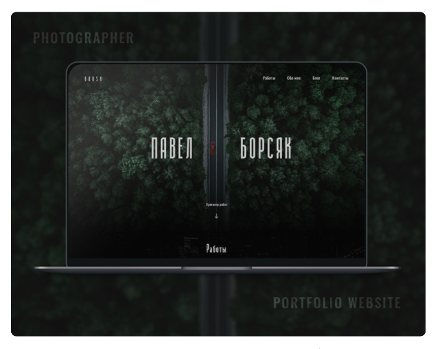

Portfolio
Beskrivelse
Hej er og velkommen til min portfolio!
I denne proces har jeg udfordret mig selv, både med kode vi har lært i løbet af semesteret, og så har jeg selv udforsket lidt ved hjælp af google. Det vil jeg komme ind på her.
Idé
Mine tanker
Da jeg skulle idéudvikle denne side, spurgte jeg mig selv om, hvem er jeg? og hvad vil jeg gerne have at min portfolio udstråler?
Jeg skrev nogle ting ned, som jeg syntes var vigtige.
- Kreativ
- Teknisk
- Sjov
- Rød tråd
Wireframe
Prototype
Jeg begyndte at gøre min idé mere virkelig, ved at skabe en prototype ud fra mit wireframe. Jeg har dog ændret nogle ting senere i processen, da jeg ikke syntes at det så ud som jeg forestillede mig.
Billeder
Inspiration
Jeg er helt vild med denne måde at fremvise sine projekter på.
Jeg har derfor prøvet at lave noget i samme stemning, for mine splash fotos.
Eksempler på mine billeder

Kodning
Index splash billede
Jeg er ret vild med, når en side nærmest bliver levende, derfor kastede jeg mig ud i at lave en form for fixed, som skaber en illusion af et nyt perspektiv når man scroller.

Min html er simpelt bygget op med div'er.

html

CSS
Jeg tænkte at der måtte være en måde, hvor man ville kunne få ting til at ske, afhængig af hvor man er på siden. Jeg googlede og fik svaret.
Koden fortæller, at når når vi er mindre end 400px fra toppen af siden, skal billedet være fixed, efter 400px, fryser billedet.
Javascript
Portfolio links
Her ønskede jeg at skabe noget kreativt som gik ud over kant. Jeg legede længe med det, indtil jeg syntes at det fungerede.

html
Jeg har brugt animation, når man hover over linksene – det gør det mere sjovt og spændene.

CSS :hover
Knapper
For at få mine knapper som jeg ønskede, har jeg måtte være lidt kreativ.
Jeg har lagt en baggrund på min knapper, som først bliver synlig med en lille animation, når man holder musen over.